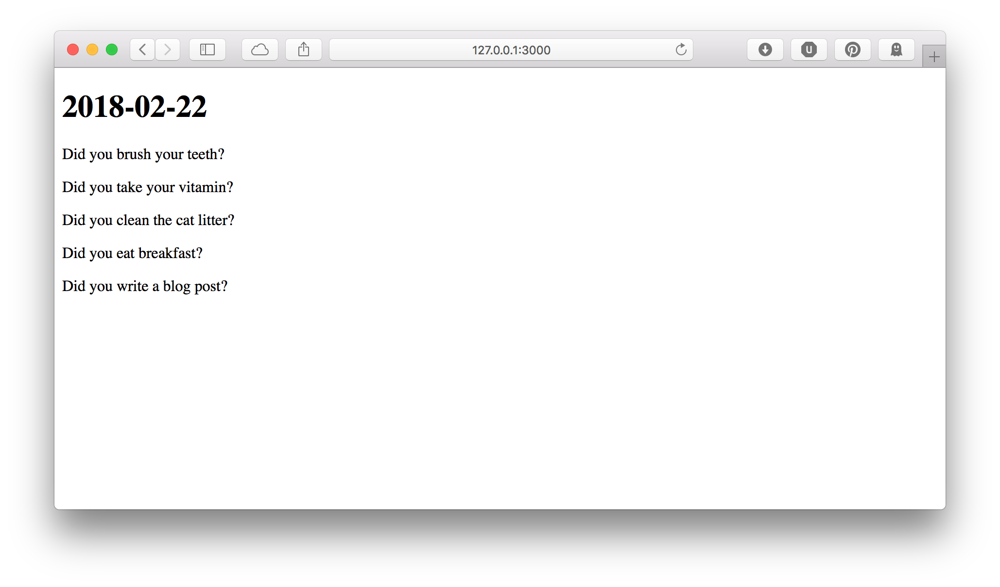

Display the To-do List
Now that we have some log items, let's display them! When a user visits
our root page (/), we want to display the current date and the list of
the log entries that are available to complete for that date. So let's
edit our get '/' route.
Currently, our route displays our index.html.ep template just by being
named 'index':
get '/' => 'index';
Route names in Mojolicious are used to set the default template to render, and to refer to routes later when we want to build URLs or redirect to a specific route. The route's name is different from its URL so that the URL can change but the route name can stay the same, making sure that all the links to the route are updated appropriately.
In addition to giving a route a name, we can also give it a subroutine
to handle the request and help generate a response. Building a response
in Mojolicious mostly means adding data to the stash and rendering a
template.
The subroutine must be the second argument to the get function, so our
route will now look like this:
get '/' => sub {
my ( $c ) = @_;
...;
} => 'index';
Collecting Data in the Stash
First, we start by finding out what today is, which we already know how to do:
get '/' => sub {
my ( $c ) = @_;
my $dt = DateTime->today;
Next we need to get the items that should appear today. But, before we
can get these items, we should make sure that they exist by calling our
build_todo_log helper.
$c->build_todo_log( $dt );
Now we can get our items. These items should have a start date less than
or equal to today's date, and an end date greater than or equal to
today's date. We need to know the ID of the log entry (for later), the
text of the todo item (joining the todo_item table), and when (if) the
log entry was completed.
my $sql = <<' SQL';
SELECT log.id, item.title, log.complete
FROM todo_log log
JOIN todo_item item
ON log.todo_item_id = item.id
WHERE log.start_date <= ?::date
AND log.end_date >= ?::date
SQL
my $result = $c->pg->db->query( $sql, ( $dt->ymd ) x 2 );
my $items = $result->hashes;
Then we can render our template, passing in all the data we have (our date and our items).
return $c->render(
template => 'index',
date => $dt,
items => $items,
);
The arguments to the render() method get added to the current
request's stash. We could also add things explicitly using the
Mojolicious::Controller stash() method.
Our entire route looks like this:
get '/' => sub {
my ( $c ) = @_;
my $dt = DateTime->today;
$c->build_todo_log( $dt );
my $sql = <<' SQL';
SELECT log.id, item.title, log.complete
FROM todo_log log
JOIN todo_item item
ON log.todo_item_id = item.id
WHERE log.start_date <= ?::date
AND log.end_date >= ?::date
SQL
my $result = $c->pg->db->query( $sql, ($dt->ymd) x 2 );
my $items = $result->hashes;
return $c->render(
template => 'index',
date => $dt,
items => $items,
);
} => 'index';
Rendering the Template
Once we've prepared all the data our template needs, we need to change
our template to display the data. Down below our __DATA__ marker, in
our @@ index.html.ep template, we need to show the current date and
display the list of items we need to do today.
In our template, each stash item is available as a scalar variable in
our template: date in the stash becomes $date in the template, and
the same for items:
@@ index.html.ep
% layout 'default';
% title 'Welcome';
<h1><%= $date->ymd %></h1>
% for my $item ( @$items ) {
<p><%= $item->{title} %></p>
% }
In our new template, we use the ymd() method of the DateTime object to
get a simple date in <year>-<month>-<day> format. Then we loop over
the arrayref of items to display the item's title.
Now let's give it a test. When we're doing rapid development, it's nice
to not have to restart a server to load new code, so Mojolicious ships
with a command called morbo that automatically restarts the server
when there's new code. Let's use morbo to run our server:
$ carton exec morbo myapp.pl
Server available at http://127.0.0.1:3000
Then we can look at our work so far: 

Our full code now looks like this:
CODE(0x7fc1da7ea580)